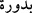

GERÇEKTEN BEN
ZÂLİMLERDEN OLDUM!
87. Zünnûn’u da (Yunus’u da zikret). O öfkeli bir halde geçip gitmişti; bizim
kendisini asla sıkıştırmayacağımızı zannetmişti. Nihâyet karanlıklar içinde:
“Senden başka hiçbir ilah yoktur. Seni tenzih ederim. Gerçekten ben zalimlerden
oldum!” diye niyâz etti.
88. Bunun üzerine onun duâsını kabul ettik ve onu kederden kurtardık. İşte biz
müminleri böyle kurtarırız.
“Zünnûn’u da” Yunus’u da zikret! Zünnûn balık sâhibi demektir. Kasdedilen, Yûnus
b. Metta (a.s.)’dır. Câmiu’l-usûl’de belirtildiğine göre Metta’nın Yûnus (a.s.)’ın
annesinin adı olduğu da söylenmiştir. Atâ ise şöyle demiştir: “Ben Kâ’b’a: “Metta,
Yûnus (a.s.)’ın annesinin mi, yoksa babasının mı adıdır?” diye sordum. Şöyle cevap
verdi: “Babasının adıdır. Annesi Bedûra’ ()’dır.[208] Annesi, Hârun (a.s.)’ın
evlâdından idi.
Yûnus (a.s.)’a “Zü’n-nûn” denilmesi, onu balık yuttuğu içindir.
İmam Süheylî şöyle der: “Bu âyette Yûnus (a.s.) “nûn”a izâfe edilmiştir. Kalem
sûresinde ise ““Balık sâhibi (Yunus) gibi olma.” (el-Kalem 68/48)
buyrulmuştur. “Zünnûn” diye anılması, övgü içindir. Çünkü “zû” lafzı ile yapılan izâfet,
“sâhib” lafzı ile yapılan izâfetten daha üstündür. Çünkü “zû” tâbîye, “sâhib” ise tâbi
olunana izâfe edilir. Nitekim Ebû Hüreyre (r.a.) hakkında “Sâhibü’n-Nebî (Nebî
(a.s.)’ın arkadaşı)” denir, “en-Nebiyyü sâhibü Ebî Hüreyre (Ebû Hüreyre’nin arkadaşı
Nebî” denilmez. “Zû” ile sâhiplik belirtmeye gelince, “zü’l-mâl (mal sâhibi)” ve “zü’l-
arş (Arş’ın sâhibi)” denilebilir. Kalem sûresinde olduğu gibi bazı sûrelerin başında
bulunan hurûf-ı teheccîden olması hasebiyle “nûn” lafzı, “hût”tan daha üstündür.
“O öfkeli bir halde geçip gitmişti.” Yâni onun Ninova halkına kızarak gittiği zamanki
durumunu an. Ninova, Musul’da bir yerdir. Yûnus (a.s.) kavmini uzun süre Allah’a
çağırdığı halde müsbet bir netice alamadı. Onlar da karşı gelmekte şiddeti arttırarak
inatlarında ısrar ettiler. Bunun üzerine o, kendisine emredilmediği halde oradan ayrıldı.
Âyetteki “ lâfzı, Yûnus (a.s.)’ın kavmine pek kızdığına delâlet eder.
Denilir ki: “Yûnus (a.s.) kavmine yakın bir vakitte kendilerine azâbın ineceğini
bildirdi ve onlardan ayrıldı. Bir süre sonra ona Allah’ın onlara azâb etmediği haberi